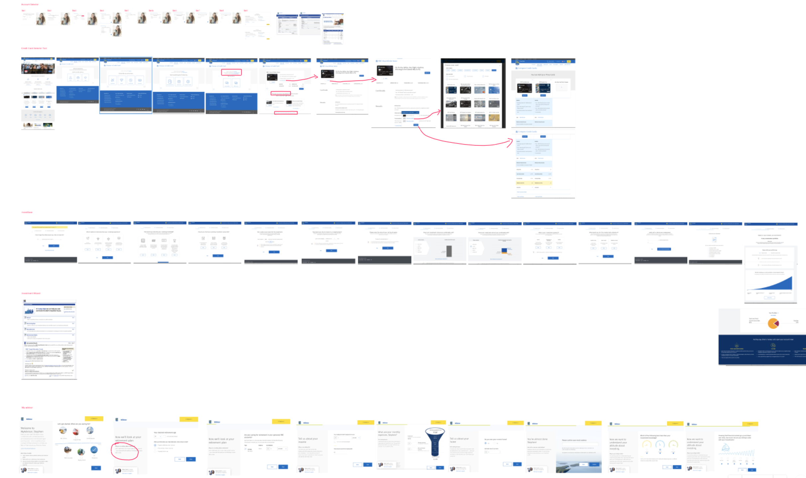
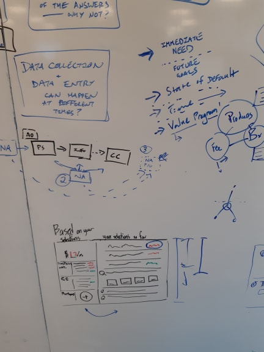

Background
I worked on the end-to-end design of the Banking Reinvention project. This involved designing a tool to support the release of a new chequing product and customer loyalty program, as well as modifying an existing version of the current client account opening experience.
The main work within the Banking Reinvention project stream was the The Needs Assessment Tool. This tool is used to support product discovery conversations between advisors and clients, and to aid them in finding the right chequing account suitable for them. Aswell, this tool had to communicate a new product shelf, as well as an accompanying value program that accounted for depth of engagement with RBC products.
Problem Framing
To gain a better understanding of the current assessment tools that advisors used, we audited some of the client-facing ‘wizard’ tools that was available through RBC. These tools ranged from account selectors currently used by advisors, to self-serve credit card recommendation tools.

InVision Freehand of our screenshot collection of various wizard tools
We hypothesized that advisors and clients have a problem:
- • Providing transparent recommendations
- • Evaluating a client’s multi-product needs
- • Understanding future needs
Our goals and focus for this tool was to:
- • Output a recommendation with minimal inputs to support a range of conversations
- • Be called upon when necessary
- • Rationalize making multi-product recommendations so clients feel confident
- • Support conversations beyond the client’s immediate needs and understand future value


Rapid whiteboard wireframes to explore various interactions and layout options
The wireframes were transitioned to paper prototypes so we could easily and rapidly communicate our thinking to not just our team, but also stakeholders. This process is helpful to consider what steps in the journey the user will take, and along with that, what components, elements, and even animation schemes might be possible.


Video prototyping of the tool made by Michael Liston, Senior Interaction Designer and designers dueling their paper prototypes
These paper prototypes were used as artifacts for our first round of user interviews with advisors. We discovered that there wasn’t an optimal set of questions that advisors might have used to make a recommendation. We also learned that every conversation between an advisor and a client is different, so by steering the questions, this took away from the genuine and organic conversations that naturally occur and even made the process seem robotic to some advisors.
During our second round of testing with our prototype (below), we were looking at concept testing. This was the first time the advisors seen this product but the general feedback was overall receptive, pointing to the easy dissection of the account features and the overage fees. We also brought back feedback on the focus and hierarchy of the design, and advisors "Not knowing where to start" as well as feeling overwhelmed with the design on first sight.

Second version of the prototype looked to solve for some of the feedback advisors brought up during the initial version

From the lower fidelity prototypes, our visual designer and content designer helped refine those along with a third round of user interviews with advisors to conclude with the following prototype.
As the tool had many states, it was important to use animations to enhance and support the user experience of the tool. For example, as the recommended tag is one of the few changes that occurs when switching between two accounts, I wanted to progressively reveal the tag along with the content to give the account an accent and reassure to both the advisor and client, that this is indeed the right account.
Working end-to-end on this product shed light on the design process, which like the various assessment tools ― is not linear. This was my first time working on an embedded team with developers and product, which sped up both the design and development process, as well as helping us manage the work in small increments that aligned with concurrent user research. There were some external factors beyond our team's control that influenced a few of the design decisions, which surfaced from out initial prototype. It was so important to loop in stakeholders throughout the process, and update them on both the design and research checkpoints to align the vision together as a team.
From a tools perspective, Michael Liston, the Senior Designer on my team introduced me to many variations in prototyping such as paper prototyping with sticky notes, and video prototyping, as well as having the opportunity to be able to pick up and learn Framer as an addition to my toolbox.